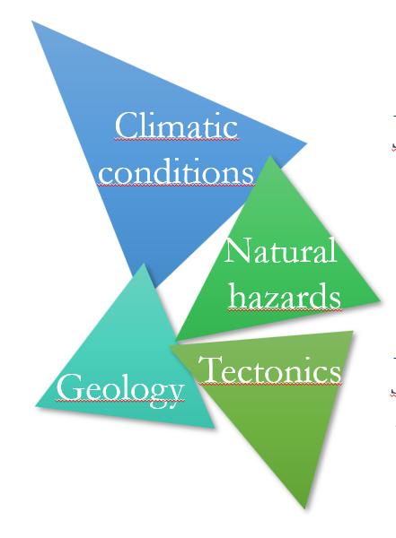
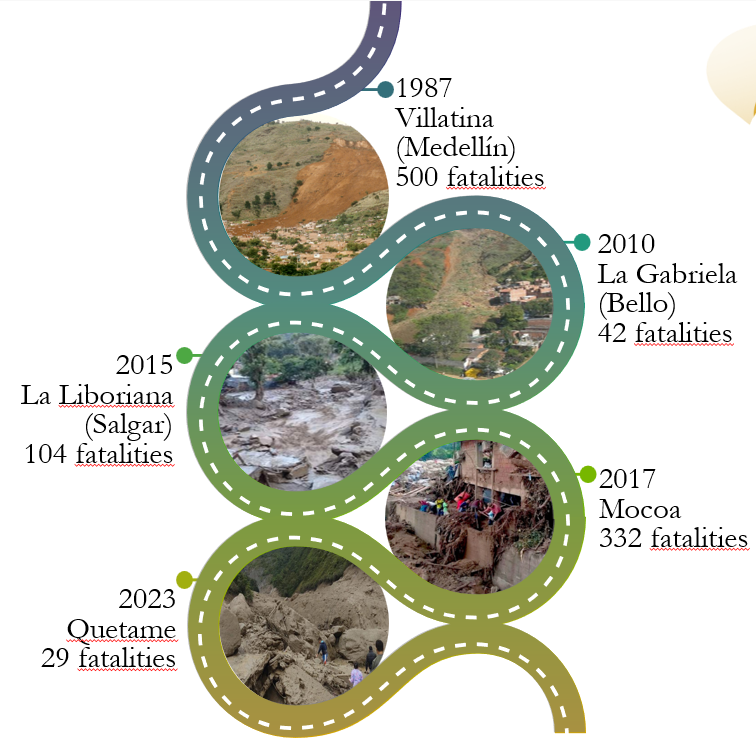
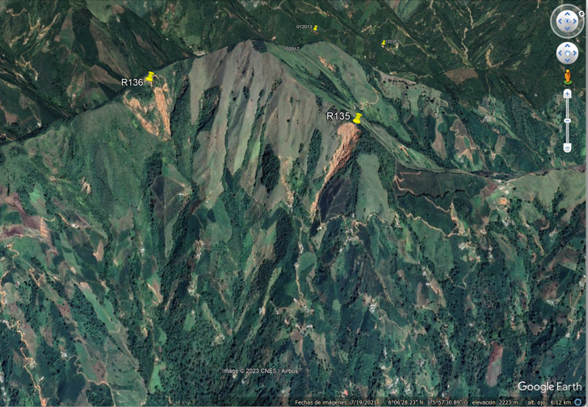
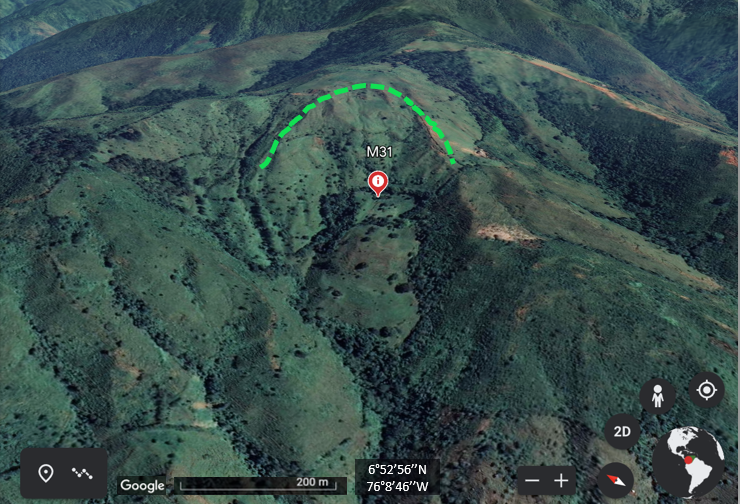

Landscape evolution & landslides in the northern Colombian Andes
Edier Aristizábal & Oliver Korup
Geohazards Group
Institute of Environmental Science and Geography
Postdam University
Project supported by:
Alexander von Humboldt Foundation
Intro
Multi-geohazard setting in Colombia
Natural hazard
 Regional setting
The northern Colombian Andes
Elevations > 3700 msnm
Easter Cordillera profile (10km)
Central Cordillera profile (10km)
Western Cordillera profile (10km)
Profile NW (10km)
Profile NE (10km)
Local setting
Study area relief
Local geological setting
Relief
Major basins
Longitudinal river profiles
Drainage network
Magdalena basin
Cauca basin
Atrato basin
Rainfall
Profile A
Profile B
Profile C
Swath profiles EW
Python Package: pyswath
SRTM 30mx30m
Sections North
Sections Cauca NW
Sections Caldas-Bello
Sections Ovejas
Sections South
Swath profiles NE
Python Package: pyswath
SRTM 30mx30m
Sections Cauca NS
Sections NW
Sections Ovejas-Espíritu Santo
Sections Espíritu Santo 1
Sections Espíritu Santo 2
Sections NW
Swath profiles NW
Python Package: pyswath
SRTM 30mx30m
Sections Cauca NS
Sections Rionegro
Sections Bello
Sections Ovejas-Espíritu Santo
Sections Espíritu Santo 1
Sections Espíritu Santo 2
Natural hazard inventory
Recent landslides
Recent landslides
Ripley's function
Relict landslides
Relict landslides
Ripley's function
Geology
Rainfall
$\chi$ analysis
LSDTopoTools
SRTM 30mx30m
$\chi$ plot (DEM 30m)
$\chi$ plot (DEM 12.5m)
$\chi$ plot & & faults (DEM 12.5m)
$\chi$ plot & transient borders (DEM 30m)
$\chi$ plot & transient borders (DEM 12.5m)
$\chi$ plot & Transient borders & faults (DEM 12.5m)
Transient borders (DEM 30m)
Transient borders (DEM 12.5m)
Transient borders & faults (DEM 12.5m)
Transient borders & Rainfall
Recient landslides
Relict landslides
Elevation - $\chi$ plot
Drainage channels and landslides
Hypsometric analysis
SRTM 30m & AlosPalsar 12.5m
Hypsometric index (DEM 30m)
Hypsometric index (DEM 12.5m)
Hypsometric index (DEM 12.5m)
Hypsometric index & faults (DEM 12.5m)
Hypsometric index & recent landslides
Hypsometric index & relict landslides
Rainfall vs. hypsometric index
Recent
Relict
Structural density vs. hypsometric index
Recent
Relict
Recent
Relict
Structural analysis
Structural orientation by 5kmx5km blocks
Structural density by 5kmx5km blocks
Structural orientation by tectonic blocks
Structural density by tectonic blocks
Structural density
Knickpoint evolution
Knickpoint evolution
Knickpoint evolution & transient borders
Knickpoint evolution & faults
Knickpoint evolution and landslides
Nechi
Nare
Arma
San Juan
Sucio
Sub-basin Nechi
Nechi
Sub-basin Nare
ALOS-PALSAR 12.5mx12.5m